光阴似箭，我也做起了毕业设计。随波逐流，我也玩起了深度学习。
深度学习需要较强的计算能力，在网络上找了一圈，列出一些可用的方案。
- 极客云
- 谷歌云 。提供一年免费试用，但需要外币信用卡。
- 谷歌的Colaboratory
- 厦大HPC
- 淘宝西电机房等
- 百度深度学习平台
- AWS
- DeepBrain Chain
- 美团云 售罄
- 滴滴云
- 华为云
- 阿里云
- 参考文章
基本环境
在谷歌云上搭建起 Ubuntu16.04 + Python3.5 + tensorflow-gpu-1.4 + CUDA v8 + cuDNN v6 的环境。
申请试用谷歌云
地址可随意填，记录两个。
台中市大甲区大甲里 邮编：43749
California(加利福尼亚省) Adelanto(阿德兰托市) 邮编[ADELANTO CA 92301]
新建虚拟机
进入Google Cloud Platform -> Compute Engine -> VM 实例 ，通过“创建实例”新建一台虚拟机。
- 机器类型中选择自定义来添加GPU数量和类型。
- 需要先按提示申请升级账户才能进行上述操作。很快会有邮件反馈申请成功。
- 自定义磁盘容量，防火墙允许流量。
- 点击创建得到一台全新的云端虚拟机。
远程访问
- 添加静态外部IP地址。在VM实例页面，实例右侧的设置处点击查看网络详情即可。
- 在Compute Engine -> 元数据 中修改SSH 密钥。使用XHSELL或命令行工具生成密钥对后在云端按指定格式添加公钥，然后可在本地用私钥远程登陆。
安装Anaconda
wget https://repo.continuum.io/archive/Anaconda3-4.2.0-Linux-x86_64.shchmod +x Anaconda3-4.2.0-Linux-x86_64.sh./Anaconda3-4.2.0-Linux-x86_64.sh按提示选择，对于是否添加到PATH记得选yes。source ~/.bashrc使conda等命令生效。conda create -n tensorflow python=3.5建立虚拟环境。source activate tensorflow激活环境。pip install --ignore-installed --upgrade tensorflow-gpu==1.4.0安装tensorflow。lspci -vnn | grep VGA -A 12查看显卡类型1
2
3
4
5
6
7
8
9
10
11
12
13
14
15(tensorflow) dfindneo@gaster:~/tf/aster/c_ops$ lspci -vnn | grep VGA -A 12
00:03.0 Non-VGA unclassified device [0000]: Red Hat, Inc. Virtio SCSI [1af4:1004]
Subsystem: Red Hat, Inc. Virtio SCSI [1af4:0008]
Physical Slot: 3
Flags: bus master, fast devsel, latency 0, IRQ 11
I/O ports at c080 [size=64]
Memory at fd000000 (32-bit, non-prefetchable) [size=128]
Capabilities: <access denied>
Kernel driver in use: virtio-pci
00:04.0 3D controller [0302]: NVIDIA Corporation GP100GL [Tesla P100 PCIe 16GB] [10de:15f8] (rev a1)
Subsystem: NVIDIA Corporation Device [10de:118f]
Physical Slot: 4
Flags: fast devsel, IRQ 11
安装显卡驱动
访问NVIDIA官网 ，选择配置。
点击search，看到对应的版本是384.66
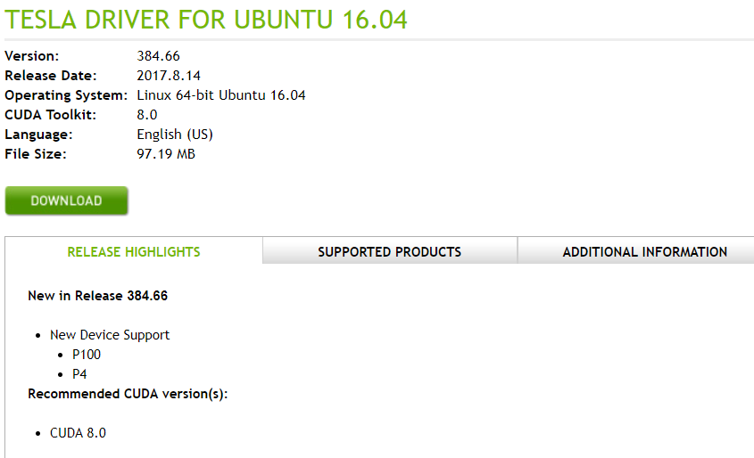安装驱动
1
2
3
4
5
6sudo add-apt-repository ppa:graphics-drivers/ppa
sudo apt-get update
sudo apt-get install nvidia-384 #此处要根据上面查询到的版本适当更改
sudo apt-get install mesa-common-dev
sudo apt-get install freeglut3-dev
sudo reboot -h now重启后可以使用
nvidia-smi命令查看是否安装成功。
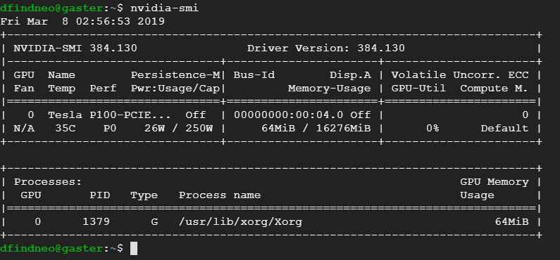
安装CUDA8.0
- 我使用
sudo apt install nvidia-cuda-toolkit安装的CUDA是7.?版本的，使用sudo apt remove nvidia-cuda*卸载掉了。 - 要安装CUDAv8.0，在这个页面选择系统、架构、发行版及其版本，安装类型可选择runfile。如果是Ubuntu16.04，可直接
wget https://developer.nvidia.com/compute/cuda/8.0/Prod2/local_installers/cuda_8.0.61_375.26_linux-run，然后sh cuda_8.0.61_375.26_linux-run。 - 执行
cd ~/NVIDIA_CUDA-8.0_Samples/1_Utilities/deviceQuery && make && ./deviceQuery。如果输出末尾有PASS字样，表示安装成功。 - 使用
nvcc --version查看版本信息。
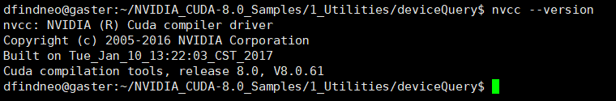
安装cuDNN6.0
- 登陆账号后访问
https://developer.nvidia.com/compute/machine-learning/cudnn/secure/v6/prod/8.0_20170307/cudnn-8.0-linux-x64-v6.0-tgz，点击下载，在chrome浏览器中按CTRL+J查看真实下载链接，暂停下载，然后在shell里wget该链接即可。下载后重命名文件为cudnn-8.0-linux-x64-v6.0.tgz。 tar xzf cudnn-8.0-linux-x64-v6.0.tgzsudo cp cuda/include/cudnn.h /usr/local/cuda/include/sudo cp cuda/lib64/libcudnn* /usr/local/cuda/lib64/sudo chmod a+r /usr/local/cuda/include/cudnn.hsudo chmod a+r /usr/local/cuda/lib64/libcudnn*- 安装完成
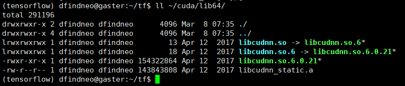
到此为止深度学习的基本环境已经安装完成。可以在Compute Engine -> 快照 中建立一个快照。
接下来记录想要复现和改进的模型 aster 的基本环境配置。
ASTER环境
激活虚拟环境并安装依赖
1 | source activate tensorflow |
下载源码
1 | mkdir tf && cd tf |
按照readme依次完成三步配置
①Go to c_ops/ and run build.sh to build the custom operators
1 | cd ~/tf/aster/c_ops |
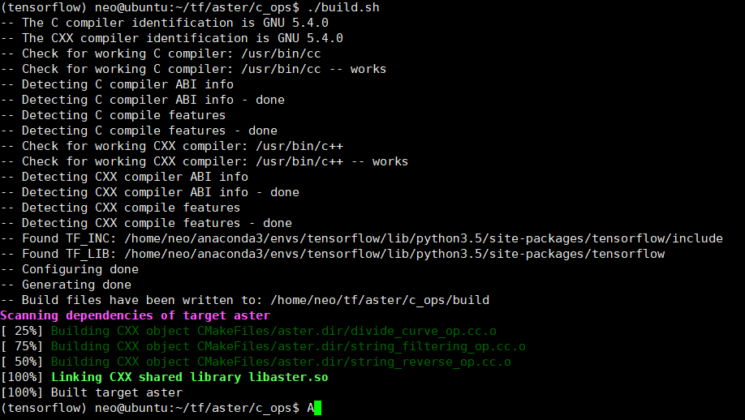
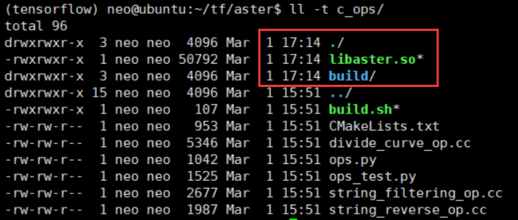
②Execute protoc aster/protos/*.proto --python_out=. to build the protobuf files
1 | cd ~/tf |
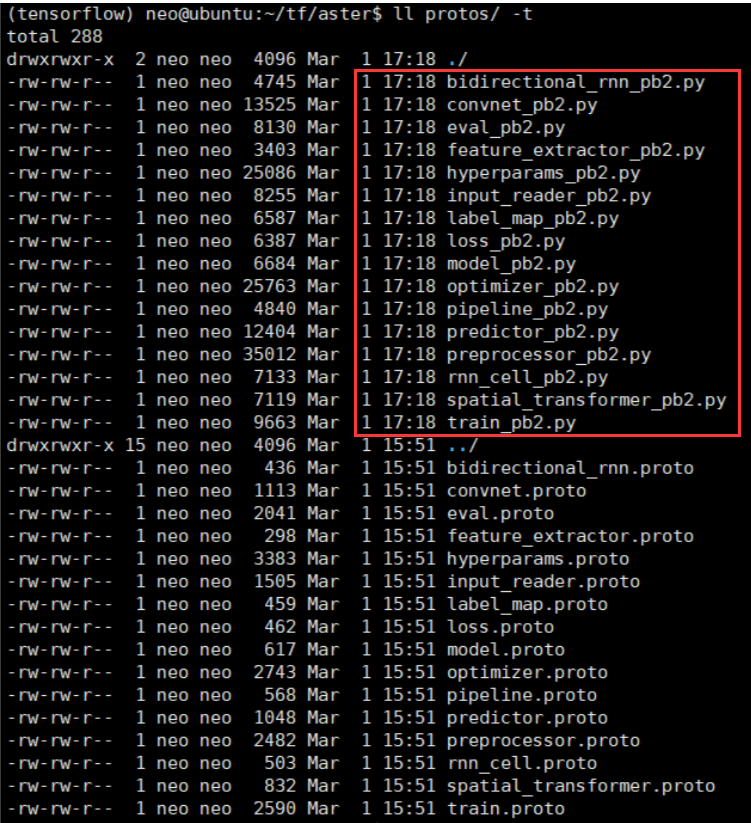
③Add /path/to/aster to PYTHONPATH, or set this variable for every run
在~/.bashrc 末尾加两行
1 | export PYTHONPATH="${PYTHONPATH}:/home/neo/tf/aster" |
下载作者提供的模型
1 | cd ~/tf/aster/experiments/demo/ |
运行demo
python aster/demo.py
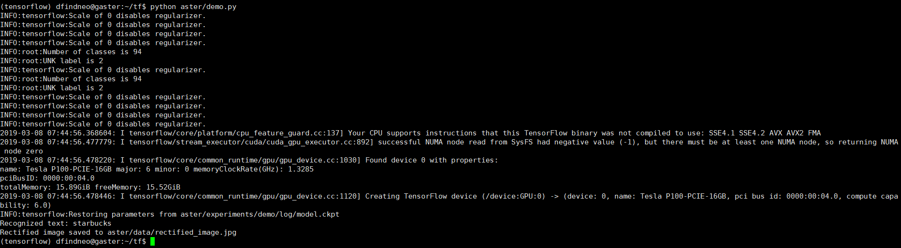
数据集下载
cute80
- 主页
- 下载：CUTE80_Dataset.zip (44 MB)
ic03
ic13
ic15
Downloads - Incidental Scene Text
Download below the training dataset and associated ground truth information for each of the Tasks.
Task 4.1: Text Localization (2015 edition)
Training Set
Training Set Images (88.5MB).- 1000 images obtained with wearable cameras
Training Set Localisation and Transcription Ground Truth (157KB).- 1000 text files with word level localisation and transcription ground truth
Test Set
Test Set Images (43.3MB).- 500 images obtained with wearable cameras. You can submit your results for this Task over the images of the test set through the My Methods section.
Test Set Ground Truth (244Kb). - 500 text files with text localisation bounding boxes for the images of the test set.
Task 4.2: Text Segmentation (N/A)
Not available.
Task 4.3: Word Recognition (2015 edition)
Training Set
Training Set Word Images, along with Transcriptions Ground truth (40.5MB).- ~4468 cut out word images corresponding to the axis oriented bounding boxes of the words are provided along with a single text file with the relative coordinates of the bounding shape within each word image. Transcription ground truth is provided in a single txt file.
Test Set
Test Set Word Images (21.5MB).- 2077 cut out word images corresponding to the axis oriented bounding boxes of the words are provided along with a single text file with the relative coordinates of the bounding shape within each word image. You can submit your results for this Task over the images of the test set through the My Methods section.
Test Set Ground Truth (49Kb). - A single text file with the transcriptions of the 2077 images of the test set. Each line corresponds to an image of the test set.
Task 4.4: End to End (2015 edition)
Training Set
Training Set Images (88.5MB).- 1000 images obtained with wearable cameras
Training Set Vocabulary (16KB).- Vocabulary of all words (words of 3 characters or longer comprising only letters) appearing in the training set
Training Set Per-image Vocabularies (504KB).- Vocabularies of 100 words per image, comprising the words appearing in the image plus distractors
Training Set Localisation and Transcription Ground Truth (157KB).- 1000 text files with word level localisation and transcription ground truth
Test Set
Test Set Images (43.3MB).- 500 images obtained with wearable cameras. You can submit your results for this Task over the images of the test set through the My Methods section.
Test Set Vocabulary (8KB).- Vocabulary of all words (words of 3 characters or longer comprising only letters) appearing in the test set
Test Set Per-image Vocabularies (248KB).- Vocabularies of 100 words per image, comprising the words appearing in the image plus distractors
Test Set Ground Truth (244 Kb). - 500 text files with text localisation bounding boxes for the images of the test set.
Other
Generic Vocabulary (796 KB).- A vocabulary of about 90 k words derived from the dataset publicly available here. Please consult [1,2] for further information as well as the disclaimer in the vocabulary file itself.
iiit5k
- 主页
- 下载：IIIT5K-Word_V3.0.tar.gz (106 MB)
svt
- 主页
- 下载：Street View Text (118MB)
synth90k
- 主页
- 下载：mjsynth.tar.gz ( 10 GB )，解压后约34 G，生成的 tfrecord 约16 G。
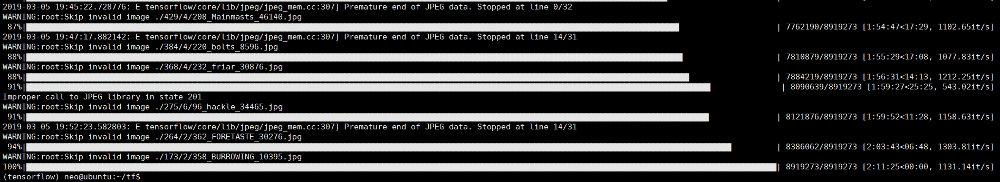
synthtext
- 主页
- 下载：SynthText.zip 约40G
数据集处理
在 ~/tf/data 目录下存放数据集文件夹，配置 ~/tf/aster/tools/creat_*.py 中的输入输出目录，运行脚本可在数据集同目录下得到tfrecord文件。

训练
在~/tf/data/目录下存放tfrecord文件；
在~/tf/aster/experiments/ 新建train1 文件夹，再在其中新建config 和 log 文件夹；
在config 文件夹内新建trainval.prototxt ，内容参照~/tf/aster/experiments/demo/config/trainval.prototxt 。
执行训练命令后在~/tf/aster/experiments/train1/log 目录下生成checkpoint文件等。
train :
1 | cd ~/tf/ |
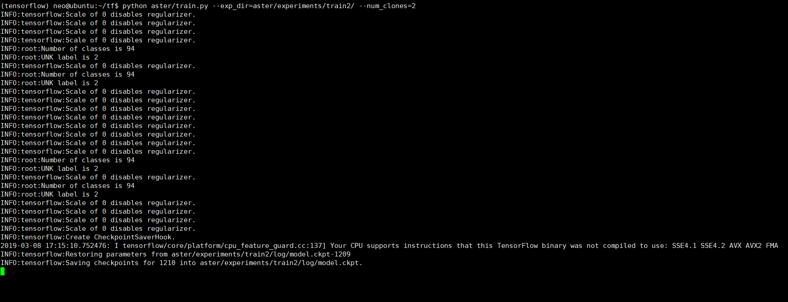
eval :
1 | cd ~/tf/ |
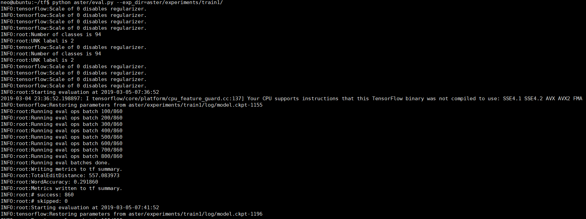
其他
提高访问速度
如果是位于国内的服务器，可更改部分操作以提高访问速度。
修改Ubuntu更新源
编辑Ubuntu16.04的 /etc/apt/source.list 为以下内容。
1 | deb https://mirrors.tuna.tsinghua.edu.cn/ubuntu/ xenial main restricted universe multiverse |
使用ssh
sudo apt update && sudo apt install openssh-server && sudo service ssh start
sudo apt install lrzsz 安装 lrzsz 后用sz / rz 命令进行小文件传输，大文件用sftp。
下载Anaconda
wget https://mirrors.tuna.tsinghua.edu.cn/anaconda/archive/Anaconda3-4.2.0-Linux-x86_64.sh
修改Anaconda软件源
1 | conda config --add channels https://mirrors.tuna.tsinghua.edu.cn/anaconda/pkgs/free/ |
修改pip源
mkdir -p ~/.pip && touch ~/.pip/pip.conf修改
~/.pip/pip.conf内容为1
2
3
4[global]
index-url = https://pypi.tuna.tsinghua.edu.cn/simple
[install]
trusted-host=mirrors.aliyun.com
（Windows下为 C:\Users\USERNAME\AppData\Roaming\pip\pip.ini ）
克隆GitHub公开repo到私有
GitHub前段时间已经支持免费使用私有仓库，可以将代码仓库镜像自己的私有仓库，更方便地记录代码更改。
sudo apt install git
设置git配置和远程访问
1
2
3git config --global user.name findneo
git config --global user.email username@gmail.com
ssh-keygen -t rsa -b 4096 -C "usernameo@gmail.com"将~/.ssh/id_rsa.pub添加到GitHub的SSH keys。
ssh -T git@github.com测试是否成功mirror 公开仓库 bgshih/aster 到 私有仓库 findneo/myaster
在GitHub新建名为myaster的私有仓库
1
2
3
4
5
6git clone --bare https://github.com/bgshih/aster.git
cd aster.git
git push -mirror https://github.com/findneo/myaster.git
cd ..
rm -rf aster.git
git clone git@github.com:findneo/myaster.git
protocol buffers
和XML/JSON/Thrift类似，优点在于简单，快，小，后向兼容，语言平台应用无关；缺点在于自解释性不够，不能表示很复杂的结构。
只要描述proto文件，就可以使用编译器protoc(支持c++/Java/Python)自动生成用于序列化、反序列化、读写对象的操作的代码。
感谢
最后，感谢慷慨借用信用卡的朋友。
参考链接
- 学姿势 - 校园金融第一站 ——学习信用卡相关的姿势
- 美国人信息生成，美国身份生成-世界各国身份信息、地址、信用卡生成
- CUDA 下载
- cuDNN下载
- NVIDIA显卡驱动下载
- 保姆级教程——Ubuntu16.04 Server下深度学习环境搭建：安装CUDA8.0，cuDNN6.0，Bazel0.5.4，源码编译安装TensorFlow1.4.0(GPU版)
- 深度学习环境搭建：Tensorflow1.4.0+Ubuntu16.04+Python3.5+Cuda8.0+Cudnn6.0
- 论文下载：【PAMI2018】ASTER_An Attentional Scene Text Recognizer with Flexible Rectification.pdf
- 代码仓库：https://github.com/bgshih/aster
- 清华大学开源软件镜像站
- 国际Anaconda下载
- Duplicating a repository
- Google Protocol Buffer 的使用和原理